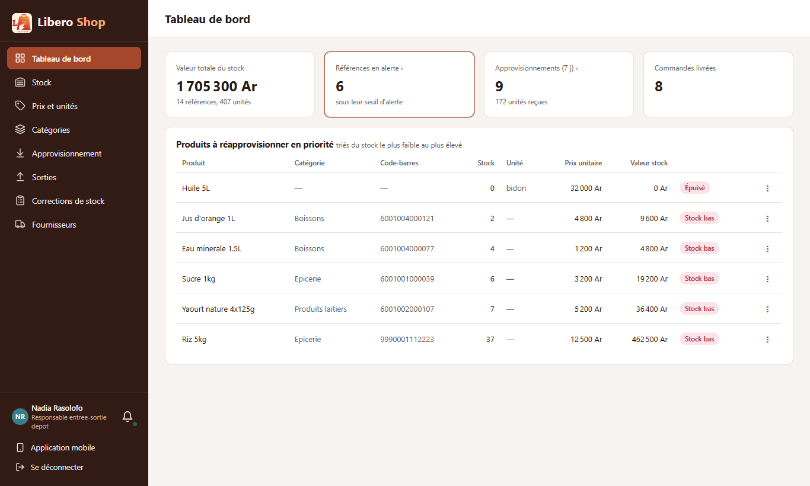
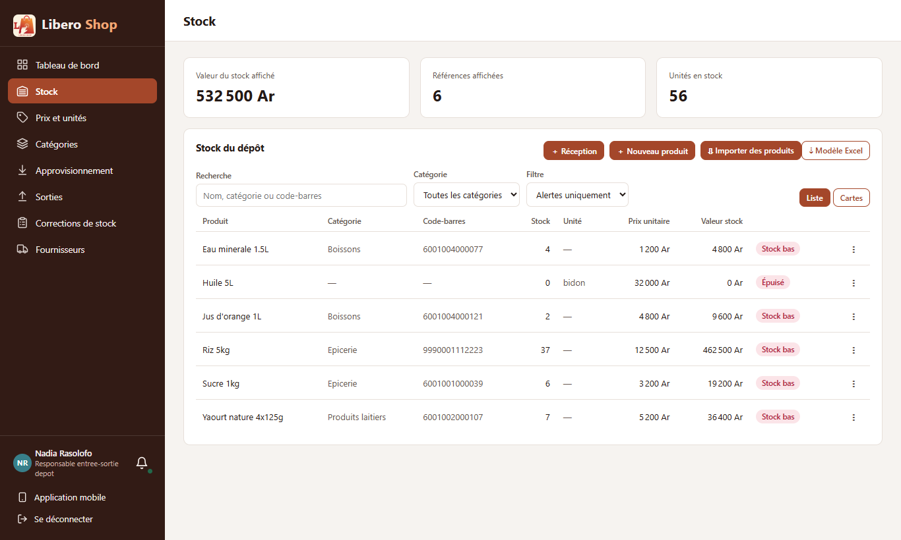
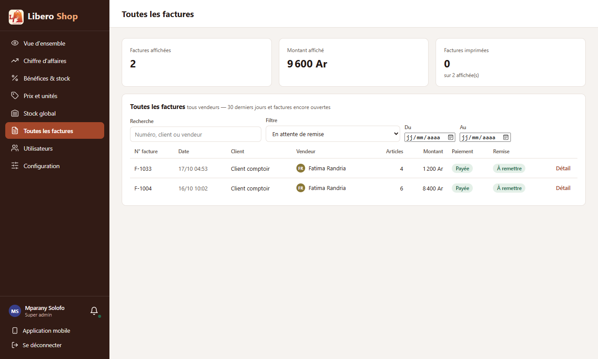

← Tous les comptes rendus de l'interface
UI-60Les compteurs s'ouvrent au clic
Résumé
- Un compteur qui compte une liste l'ouvre au clic, avec le bon filtre : « Références en alerte » ouvre le Stock en « Alertes uniquement ».
- Un compteur cliquable se reconnaît : une flèche « › » après son titre, un contour au survol ; il s'ouvre aussi au clavier (Entrée).
- Branchés : responsable de dépôt (alertes, approvisionnements), administrateur (factures non payées, commandes en attente de remise), agent de dépôt (commandes à remettre, espèces en main, remises), Prix et unités (sans prix d'entrée, vendus à perte).
- L'indication « stock inférieur à 10 » était fausse depuis les seuils par produit : elle dit maintenant « sous leur seuil d'alerte ».
1. Le problème
Les tableaux de bord affichaient « 6 références en alerte » ou « 2 commandes en attente », mais pour voir lesquelles, il fallait aller dans la bonne page et y choisir soi-même le bon filtre.
2. Ce qui a été fait
Figure 1 — Trois exemples : le compteur ouvre la liste qu'il compte, déjà filtrée.
Le filtre voyage dans l'adresse de la page (?alertes=1, ?filtre=UNPAID) : la page l'applique en
s'ouvrant, et le lien reste valable si on le recopie. Sur Prix et unités, le compteur applique le filtre sans changer de page.
3. Le résultat en images
Nadia — responsable de dépôt

Figure 2 — « Références en alerte › » et « Approvisionnements (7 j) › » s'ouvrent ; « Commandes livrées » reste un simple chiffre.

Figure 3 — Le Stock, déjà filtré : les 6 produits en alerte, chacun avec son « ⋮ ».
Mparany — administrateur

Figure 4 — Les 2 commandes en attente de remise.
4. Tableau récapitulatif
| Fichier | Changement |
|---|---|
ui/…/shared/components/kpi-card.component.ts, ui/src/styles.scss | compteur cliquable : lien filtré ou action sur la page, clavier, style |
ui/…/features/depot-manager/manager-dashboard.component.ts | alertes et approvisionnements cliquables ; indication du seuil corrigée |
ui/…/features/admin/admin-overview.component.ts | factures non payées, commandes en attente |
ui/…/features/depot/depot-dashboard.component.ts | commandes à remettre, espèces en main, remises |
ui/…/features/catalog/product-prices.component.ts | « Sans prix d'entrée » et « Vendus à perte » appliquent leur filtre |
ui/…/features/depot-manager/stock.component.ts, features/admin/all-invoices.component.ts | lisent le filtre de l'adresse |
| Règle | Test |
|---|---|
| Sans lien : un simple chiffre ; avec lien : ouvre la liste filtrée, au clic ou par Entrée ; action sur la page | kpi-card.component.spec.ts |
Tests : interface au vert (275 tests). Aucun changement côté serveur.